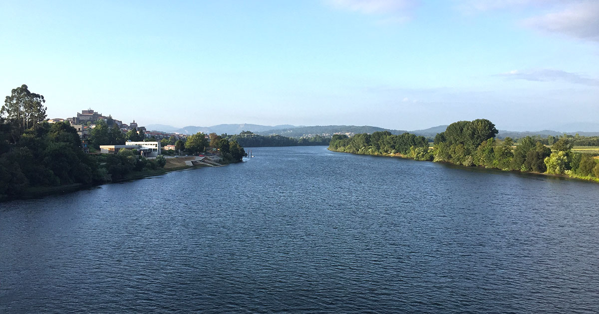
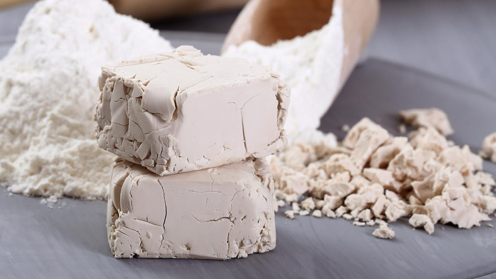

La espelta ha mantenido muchas de sus características originales que le proporcionan un perfil nutricional increíble,
junto con una fácil digestión que le otorga cualidades anti-inflamatorias.
Proteínas: Es cierto que la espelta tiene algo más de proteínas que el trigo (15% frente al 10%),
pero lo más importante es que estas proteínas contienen los ocho aminoácidos necesarios para el cuerpo humano.
Fibra: La fibra de la espelta es sobre todo fibra soluble. Ésta retrasa la absorción de los hidratos de carbono, por lo que resulta
beneficiosa para todas las personas, pero sobre todo para los diabéticos.
Triticum durum, comúnmente llamado trigo duro, es una especie común del cereal trigo, conocido también como trigo candeal,
moruno, siciliano, semolero o fanfarrón.
Es una de las especies de trigo con más alto valor nutritivo, tiene un alto contenido de gluten y está conformado de un 12
a 14% de proteína. Es una especie muy resistente a la sequía y a las enfermedades, aunque rinde menos en los cultivos
que otras especies de trigo.
Agua que viene directamente del propio rio miño, sus origenes naturales proporcionan una gran cantidad de nutrientes y minerales que de otra manera se perderían durante el trayecto entre el río y una botella de agua normal y corriente.
La levadura son unos hongos microscópicos con la capacidad de producir la fermentación (comúnmente la alcohólica) en diversos compuestos orgánicos, como azúcares e hidratos de carbono. Gracias a la levadura podemos hacer que nuestros panes crezcan y presenten esa textura tierna y esponjosa.
